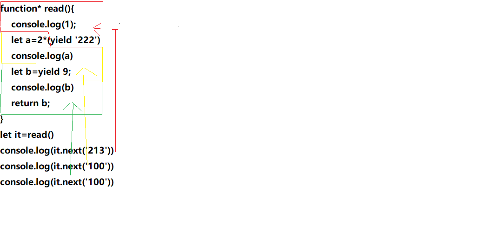

异步与同步
- 异步：所谓”异步”，简单说就是一个任务分成两段，先执行第一段，然后转而执行其他任务，等做好了准备，再回过头执行第二段,比如，在我们烧水时可以干很多事情,当水烧开后在用水洗脸。这种不连续的执行，就叫做异步。
- 同步:连续的执行,例如在烧水的过程中我们一直等待水烧开而不去干别的事情。
异步发展历史
- callback
- Promise
- gengrator函数
- async-await
高阶函数
了解异步时，我们先了解一下高阶函数这个概念
- 高阶函数：
- 接收一个或者多个函数作为参数
- 输出一个函数
1 | //判断数据类型 isType |
偏函数–> 预置参数
1 | function isType(type){ |
预置函数作为参数
1 | // loadsh _.after |
callback
1 | function read(callback){ |
promise
虽然callbake可以解决异步调用的问题,但是它也有诸多毛病
- 异步不支持try/catch,回调函数是在下一事件环中取出,所以一般在回调函数的第一个参数预置错误对象
- 回调地狱问题,异步多级依赖的情况下嵌套非常深，代码难以阅读的维护
- 多个异步在某一时刻获取所有异步的结果
- 结果不能通过return返回
为了解决回调地狱问题，提出了Promise对象，并且后来加入了ES6标准。Promise本意是承诺，在程序中的意思就是承诺我过一段时间后会给你一个结果
Promise的三种状态
- Pending Promise对象实例创建时候的初始状态
- Fulfilled 可以理解为成功的状态
- Rejected 可以理解为失败的状态
先用promise解决第一个问题”回调地狱”
1 | // 1.txt => 2.txt |
promise实现就轻松多了
1 | let fs = require('fs'); |
当第一个then中返回一个promise，会将返回的promise的结果,传递到下一个then中。这就是比较著名的链式调用了
解决同步异步的返回结果，按照顺序
我们将多个异步请求的结果在同一时间进行汇总
1 | let fs=require('fs'); |
使用promise实现
1 | let fs = require('fs'); |
promise API 详解
Promise.race
接受一个数组，数组内都是Promise实例,返回一个Promise实例，这个Promise实例的状态转移取决于参数的Promise实例的状态变化。当参数中任何一个实例处于resolve状态时，返回的Promise实例会变为resolve状态。如果参数中任意一个实例处于reject状态，返回的Promise实例变为reject状态。
1 | Promise.race([read('1.txt'),read('2.txt')]).then(data=>{ |
Promise.resolve
返回一个Promise实例，这个实例处于resolve状态
1 | Promise.resolve('成功').then(data=>{ |
Promise.reject
返回一个Promise实例，这个实例处于reject状态
1 | Promise.reject('失败').then(data=>{ |
Generator
我们发现Promise已经可以解决了异步编程问题,但是仍然不够优雅,我们更希望编写异步代码能够像同步代码一样简洁。
- genrator 函数要用* 来比标识，yield(暂停产出 )
- 他会将函数分割出好多个部分，调用一次next就会向下继续执行
- 返回结果是一个
迭代器，迭代器有一个next方法
1 | // 迭代器的实现 |
generator的用法
1 | function* read(){ |
- yield 后面跟着的是value的值
- yield 等号前面的是我们当前调用next传进来的值
- 第一次next传值是无效的

1 | // 异步 generator 主要和promise搭配使用 |
不使用co这类的迭代库实现
1 | //迭代库 |
co
有node大神tj写的co库，可以自动的将generator进行迭代
1 | let co=require("co"); |
手写co库
1 | function co(it){//it是迭代器 |
async/await - 异步的终极实现
- async和await就是generator和co的语法糖,使用async关键字，你可以轻松地达成之前使用生成器和co函数所做到的工作
- 用async来修饰函数 async 需要陪await await只能跟
promise
1 | async function r(){ |
async/await解决的问题有哪些
- 回调地狱
- 2.并发执行异步，在同一时刻同步返回结果 promise.all
- 3.解决了返回值的问题
- 4.可以实现try/catch
Q库
我们发现无论是generator还是async/await都离不开promise,我们在介绍几个有关promise的库。
1 | //需要下载npm install q |
blueBird
blueBird中有两个常用的方法一个叫
promisify另一个叫promisifyAll
2
3
4
5
6
7
8
9
10
11
return function(...arg){
return new Promise(function(resolve,reject){
fn(...arg,function(err,data){
if(err)reject(err)
resolve(data)
})
})
}
}
promisify(fs.readFile)(url,"utf8").then()
promisifyAll(fs)将所有的方法全部增加一个promise化
1 | function(obj){ |
实现Promise
- Promise是一个类,需要传递一个函数,这个函数我们称之为执行函数,函数中有两个参数resolve和reject他们也是函数，调用resolve表示成功，调用reject表示失败
- pending（进行中）、fulfilled（成功）、rejected（失败)
- 成功就不会再调用失败,默认状态是等待状态
- then是原型上的一个方法接收两个参数分别是成功的回调和失败的回调
- 调用resolve后会执行成功的回调，调用reject后会执行失败的回调
1
2
3
4
5
6
7
8
9
10
11
12
13
14
15
16
17
18
19
20
21
22
23
24
25
26
27
28
29
30
31
32
33
34
35function Promise(excutor){//excutor是执行函数
this.status='pending'//初始状态是pending
this.value=undefined;//存储成功的值
this.reason=undefined;//存储失败原因
function resolve(value){// 只有再pending才能转换成功态
if(this.status==='pending'){
this.value=value;
this.status="fulfilled";
}
}
function reject(err){ // 只有再pending才能转换失败态
if(this.status==='pending'){
this.reason=err;
this.status="rejected";
}
}
try{
excutor(resolve,reject)// executor中需要传入resolve和reject
}catch(e){
// 如果executor执行发生异常，表示当前的promise是失败态
reject(e)
}
}
Promise.prototype.then(function(onFufilled,onRejected){
if(this.status==='fulfilled'){
//成功调用回调函数
onFufilled(this.value)
}
if(this.status==='rejected'){
//失败调用回调函数
onRejected(this.reason)
}
})
异步Promise
在new Promise时内部可以写异步代码,并且产生的实例可以then多次,我们可以先将then中的成功的回调和失败的回调存到数组内，当成功时调用成功的数组即可
1 | function Promise(excutor){//excutor是执行函数 |
Promise链式调用
promise实现链式调用,返回的并不是this而是一个新的promise,因为:如果当前promise已经进入成功了的回调，回调中发生了异常如果返回的仍是当前的promise那么状态无法更改到失败态！
1 | function Promise(excutor){//excutor是执行函数 |
resolvePromise
then返回的结果可能是promise和value或者object
1 | function Promise(excutor){//excutor是执行函数 |
then中的方法异步执行
为了保证程序执行的一致性,规范中要求then中的方法必须在下一队列中执行
1 | Promise.prototype.then(function(onFufilled,onRejected){ |
值的穿透
在规范中定义then函数可以不传参,不传参默认会将成功的结果和失败的结果继续向下传递
1 | Promise.prototype.then = function (onFufilled, onRejected) { |
resolve接收promise
1 | function resolve(value) { // 调用resolve 会传入为什么成功 |
Promise.all
1 | Promise.all=function(promises){ |
Promose.race
1 | Promise.race=function(promises){ |
Promise.resolve
1 | Promise.resolve=function(data){ |
Promise.reject
1 | Promise.reject = function(reason){ |
catch
1 | Promise.prototype.catch=function(fn){ |